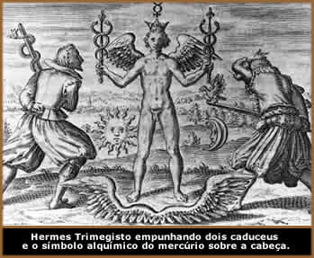

A Magia Sexual, conhecida no Oriente
como Tantra, é a prática ritualística
desenvolvida através das energias canalizadas do corpo
físico, da mente e do espírito humano. O ato de
criar outras vidas através de relações sexuais
e instituir uma força, ou um vínculo energético
entre as pessoas envolvidas, é visto como místico
e sagrado.
Como outras modalidades de Magia, a Magia Sexual
também é um recurso usado como fonte do poder que
fortalece as cerimônias ritualísticas e para obter
o auto-conhecimento através da exploração
do próprio corpo, psique e alma. A Magia Sexual é
uma das faces mais importantes da Magia moderna.
Utilizada tanto nas escolas ocidentais como nas
orientais, sua origem nos remete às práticas das
crenças pré-cristãs, sendo que os primeiros
registros datam de 3000 a.C.. A Antiga Religião da Europa
baseava-se em ritos de fertilidade para assegurar a proliferação
de animais, plantas e humanos. O conceito pagão da atividade
sexual era saudável e natural. Era a mais poderosa energia
que os humanos podiam experimentar através dos próprios
sentidos, com a manifestação afetiva de um indivíduo
ou simplesmente a ação de compartilhar prazer e
desejo carnal com outra pessoa. Assim, mulheres consagradas serviam
aos deuses em templos, o homossexualismo e o heterossexualismo
eram apenas definições das preferências sexuais,
etc.
Existem dois canais de energia no corpo humano
que estão associados ao sistema nervoso central e à
medula espinhal, conhecidos no Ocidente como Lunar e Solar
ou Feminina e Masculina (receptiva/negativa e ativa/positiva).
Geralmente, entre os não-praticantes da Magia Sexual, apenas
uma das correntes de energia está aberta e fluindo. Entre
as mulheres, apenas a corrente lunar flui desimpedida. Entre os
homens, apenas o canal solar está realmente livre. No caso
dos homossexuais, essa situação está invertida.
Em todas as situações, este fato causa um desequilíbrio
e influencia negativamente várias esferas da vida humana.
Portanto, segundo este raciocínio, o estado
sexual natural é a bissexualidade, em que ambas as correntes
fluem juntas em harmonia. A alma que habita o corpo físico
não é masculina nem feminina. Desse modo, o sexo
é meramente uma circunstância física. O fluxo
harmonioso das correntes no corpo é simbolizado pelo antigo
símbolo do Caduceu.
Um dos maiores divulgadores da Magia Sexual contemporânea
ocidental é Aleister Crowley, através da doutrina
do Thelema.
Posteriormente, diversas escolas iniciáticas a adotaram
e adaptaram de acordo com a própria filosofia. Porém,
os princípios básicos permanecem inalterados. Na
Índia, ainda é uma das práticas mais utilizadas
no hinduísmo.
Apesar de (teoricamente) compor vários sistemas
mágicos, atualmente, a maioria das tradições
não incorpora a Magia Sexual em suas atividades. Isto se
deve a opção pessoal dos praticantes (inibição
e preocupações com as doenças sexualmente
transmissíveis) e a pressão social de uma cultura
judaico-cristã, onde o sexo é visto como algo pecaminoso
e polêmico. Deste modo, nos ritos sexuais modernos, são
usadas representações simbólicas dos antigos
elementos da fertilidade, sejam objetos que representem os genitais
ou apenas uma dança ou encenação erótica.
Sagrado Feminino
Nas antigas crenças pagãs, os pólos
femininos da criação eram reverenciados como sagrados
e a mulher era vista como o principal canal gerador de vida. A
Deusa era a divindade principal, responsável pela criação
de todas as formas viventes. Dessa forma, os ritos que envolviam
Magia Sexual, utilizavam-se de mulheres e do sangue menstrual
como elementos principais do Altar Cerimonial.
O altar sagrado é formado por uma mulher
que se deita de costas, nua, com as pernas dobradas e afastadas
(de forma que os calcanhares toquem as nádegas). Um cálice
é colocado diretamente sobre seu umbigo, ligando-o ao cordão
umbilical etéreo da Deusa, a qual é invocada em
seu corpo. Derrama-se o vinho sobre o cálice. O Sumo Sacerdote
pinga três gotas de vinho, uma no clitóris e uma
em cada mamilo, traçando uma linha imaginária que
forma um triângulo no corpo feminino, tendo o útero
como centro. Segue-se um beijo em cada ponto, enquanto a invocação
é recitada.
Fluidos Mágicos
Os fluidos produzidos no corpo humano de forma
natural ou através da estimulação sexual,
também são utilizados nas cerimônias herdadas
dos povos antigos que envolvem a Magia Sexual, e são empregados
para um determinado objetivo.
O vinho ritual continha três gotas do sangue
menstrual da Suma Sacerdotisa do clã, que unia magicamente
os celebrantes nesta vida e nas próximas encarnações.
Os caçadores e guerreiros eram ungidos com pinturas ritualísticas
que continham sangue menstrual. Acreditava-se que ao unir o sangue
de duas pessoas, criava-se um vínculo entre ambas. Ungir
os mortos com o sangue era uma forma de assegurar o retorno à
vida. O sêmen era considerado energia canalizada que vitaliza
o praticante que o recebe. Ainda, o estímulo dos mamilos
faz com que a glândula pituitária secrete um hormônio
que ativa as contrações uterinas. Isso ativa o fluxo
de certos fluidos através do canal vaginal.
Criança
Mágica
A criança mágica é um termo
utilizado na Magia Sexual ocidental para designar uma imagem no
momento do orgasmo. Neste caso, a energia sexual não é
liberada como no ato sexual tradicional, mas inibida por períodos
prolongados e canalizada através da mente para que se manifeste
numa forma de pensamento mágico, formando uma imagem astral
durante o orgasmo.
Para esta atividade, é necessário
que o praticante tenha desenvolvido a arte da concentra-ção/visualização
e um controle firme sobre a própria força de vontade
pessoal, de forma que no momento do orgasmo, não haja nada
mais na mente que a imagem que deseja ver criada. Se estiver incompleta
ou difusa, é possível que interferências negativas
se manifestem e passem a consumir a energia sexual do praticante.
Este conceito é uma das bases na crença dos Sucubus.
Pancha Makara
A corrente oriental da Magia Sexual, chamada Tantra,
é dividida em cinco categorias de aplicações
distintas conhecidas como Cinco M ou Pancha Makara,
que em sua maioria, são canalizados no campo físico
(Caminho da Mão Esquerda) e outro simbólico
(Caminho da Mão Direita). O Pancha Makara recebe
interpretações diferenciadas nas cerimônias
praticadas nas correntes do Ocidente, ou em algumas situações,
são adaptadas ou omitidas.
Madya Sadhana
A palavra Madya significa Licor
e este princípio está relacionado à aplicação
do Caminho da Mão Direita com uso adequado de estimulantes
que ativam o sétimo chakra, Sahastrara, considerado
o último nível de evolução da consciência
humana e responsável pela integração dos
outros chakras.
Mamsa Sadhana
O termo Mamsa pode ser traduzido como
carne e significar que este princípio está
associado ao uso ritualístico de carne. Também pode
ser compreendido como fala (do verbo falar)
e ser interpretado como uma invocação ou um mantra.
Em quaisquer dos casos, está associado ao Caminho da Mão
Esquerda (Físico).
Matsya Sadhana
Matsya significa peixe. Este
princípio é usado tanto no aspecto físico
como no simbólico. É visto como um fluxo psíquico
que corre através dos canais da espinha dorsal, ou minoritariamente,
como o consumo ritual de peixe num banquete ou Eucaristia.
Mudra Sadhana
Este é o mais conhecido fora dos círculos
tântricos e é utilizado de maneira similar nos Caminhos
Esquerdo/Direito. Representa o uso de posições específicas
do corpo (especialmente da mão) para simbolizar ou encarnar
certas forças, além de efetuar mudanças na
consciência.
Maithuna Sadhana
A palavra Maithuna refere-se a união
sexual. Este princípio, que atua tanto no aspecto
físico como simbólico, está relacionado primitivamente
com a atividade sexual. Porém, pode ser interpretado também
como a atividade simbólica.
Por
Spectrum